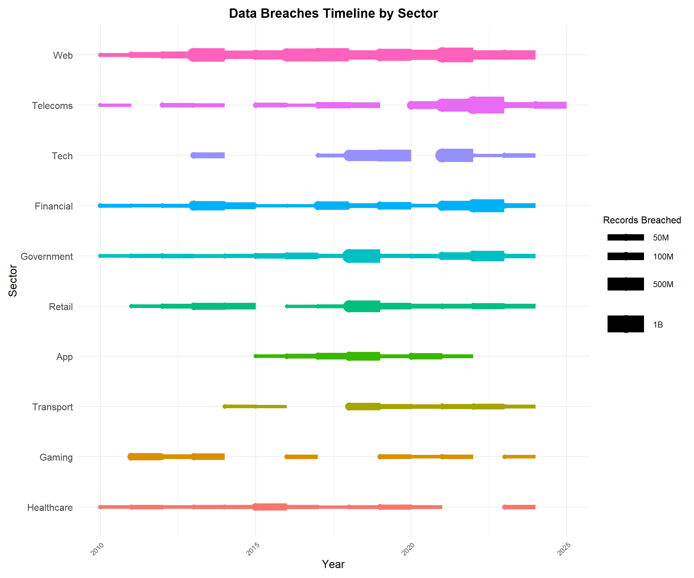

# Load required libraries
library(ggplot2)
library(dplyr)
Attaching package: 'dplyr'The following objects are masked from 'package:stats':
filter, lagThe following objects are masked from 'package:base':
intersect, setdiff, setequal, unionlibrary(ggrepel)
library(scales)
library(tidyverse)── Attaching core tidyverse packages ──────────────────────── tidyverse 2.0.0 ──
✔ forcats 1.0.0 ✔ stringr 1.5.1
✔ lubridate 1.9.3 ✔ tibble 3.2.1
✔ purrr 1.0.2 ✔ tidyr 1.3.1
✔ readr 2.1.5 ── Conflicts ────────────────────────────────────────── tidyverse_conflicts() ──
✖ readr::col_factor() masks scales::col_factor()
✖ purrr::discard() masks scales::discard()
✖ dplyr::filter() masks stats::filter()
✖ dplyr::lag() masks stats::lag()
ℹ Use the conflicted package (<http://conflicted.r-lib.org/>) to force all conflicts to become errors# Read the data
data <- read.csv("IIB Data Breaches - LATEST - breaches.csv")
# Check for any NA values in important columns
print(sum(is.na(data$sector)))[1] 0print(sum(is.na(data$year)))[1] 0print(sum(is.na(data$records.lost)))[1] 0# Group sectors into broader categories
data <- data %>%
mutate(
sector_group = case_when(
grepl("web", sector, ignore.case = TRUE) ~ "Web",
grepl("healthcare|health", sector, ignore.case = TRUE) ~ "Healthcare",
grepl("app", sector, ignore.case = TRUE) ~ "App",
grepl("retail", sector, ignore.case = TRUE) ~ "Retail",
grepl("gaming", sector, ignore.case = TRUE) ~ "Gaming",
grepl("transport", sector, ignore.case = TRUE) ~ "Transport",
grepl("financial|finance", sector, ignore.case = TRUE) ~ "Financial",
grepl("tech", sector, ignore.case = TRUE) ~ "Tech",
grepl("government", sector, ignore.case = TRUE) ~ "Government",
grepl("telecoms", sector, ignore.case = TRUE) ~ "Telecoms",
grepl("legal", sector, ignore.case = TRUE) ~ "Legal",
grepl("media", sector, ignore.case = TRUE) ~ "Media",
grepl("academic", sector, ignore.case = TRUE) ~ "Academic",
grepl("energy", sector, ignore.case = TRUE) ~ "Energy",
grepl("military", sector, ignore.case = TRUE) ~ "Military",
TRUE ~ "Miscellaneous"
)
)
# Convert `records lost` to numeric, handling non-numeric values
data <- data %>%
mutate(records.lost = as.numeric(gsub("[^0-9]", "", records.lost)),
year = as.numeric(year)) %>%
drop_na(records.lost, year, sector_group) # Drop rows with missing values in critical columnsWarning: There was 1 warning in `mutate()`.
ℹ In argument: `year = as.numeric(year)`.
Caused by warning:
! NAs introduced by coercion# Filter the data based on the specified year range and minimum records lost
start_year <- 2010
end_year <- 2024
data <- data %>%
filter(year >= start_year & year <= end_year)
# Ensure no NA values in the dataset
data <- data %>%
drop_na(records.lost, year, sector_group)
# Calculate total records lost for each sector group and select top 10 sectors
top_sectors <- data %>%
group_by(sector_group) %>%
summarize(total_records_lost = sum(records.lost)) %>%
arrange(desc(total_records_lost)) %>%
top_n(10, wt = total_records_lost) %>%
pull(sector_group)
# Print the top sectors to check the sorting
print(top_sectors) [1] "Web" "Telecoms" "Tech" "Financial" "Government"
[6] "Retail" "App" "Transport" "Gaming" "Healthcare"# Filter the data to include only top 10 sectors
data <- data %>%
filter(sector_group %in% top_sectors)
# Convert the year to a date format for plotting
data <- data %>%
mutate(StartDate = as.Date(paste(year, "-01-01", sep = "")),
EndDate = as.Date(paste(year, "-12-31", sep = "")))
# Sort the sectors by total records lost
sector_levels <- data %>%
group_by(sector_group) %>%
summarize(total_records_lost = sum(records.lost)) %>%
arrange(desc(total_records_lost)) %>%
pull(sector_group)
data <- data %>%
mutate(sector_group = factor(sector_group, levels = rev(sector_levels)))
# Create the Gantt chart with improved aesthetics and color
gantt_plot <- ggplot(data, aes(x = StartDate, y = sector_group, color = sector_group)) +
geom_segment(aes(xend = EndDate, yend = sector_group, size = records.lost), show.legend = TRUE) +
geom_point(aes(size = records.lost), show.legend = TRUE) +
scale_size_continuous(range = c(2, 10), breaks = c(50000000, 100000000, 500000000, 1000000000), labels = c("50M", "100M", "500M", "1B")) +
theme_minimal() +
labs(
title = "Data Breaches Timeline by Sector",
x = "Year",
y = "Sector",
size = "Records Breached"
) +
theme(
plot.title = element_text(hjust = 0.5, size = 16, face = "bold"),
axis.title.x = element_text(size = 14),
axis.title.y = element_text(size = 14),
axis.text.x = element_text(angle = 45, hjust = 1),
axis.text.y = element_text(size = 12),
legend.position = "right",
legend.title = element_text(size = 12),
legend.text = element_text(size = 10),
plot.margin = margin(10, 10, 10, 10)
) +
guides(color = FALSE) Warning: Using `size` aesthetic for lines was deprecated in ggplot2 3.4.0.
ℹ Please use `linewidth` instead.Warning: The `<scale>` argument of `guides()` cannot be `FALSE`. Use "none" instead as
of ggplot2 3.3.4.# Print the plot
print(gantt_plot)